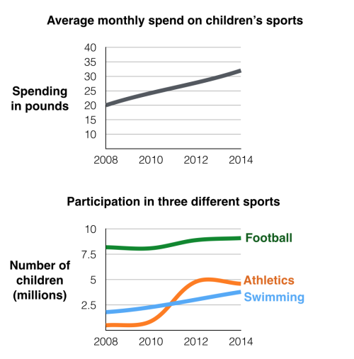

You should spend about 20 minutes on this task.
The first chart below gives information about the money spent by British parents on their children’s sports between 2008 and 2014. The second chart shows the number of children who participated in three sports in Britain over the same time period.
Summarise the information by selecting and reporting the main features and make comparisons where relevant.
Write at least 150 words.

The line graphs show the average monthly amount that parents in Britain spent on their children’s sporting activities and the number of British children who took part in three different sports from 2008 to 2014.
It is clear that parents spent more money each year on their children’s participation in sports over the six-year period. In terms of the number of children taking part, football was significantly more popular than athletics and swimming.
In 2008, British parents spent an average of around £20 per month on their children’s sporting activities. Parents’ spending on children’s sports increased gradually over the following six years, and by 2014 the average monthly amount had risen to just over £30.
Looking at participation numbers, in 2008 approximately 8 million British children played football, while only 2 million children were enrolled in swimming clubs and less than 1 million practised athletics. The figures for football participation remained relatively stable over the following 6 years. By contrast, participation in swimming almost doubled, to nearly 4 million children, and there was a near fivefold increase in the number of children doing athletics.
(185 words, band 9)
Write about the following topic.
Extreme sports such as sky diving and skiing are very dangerous and should be banned.
To what extent do you agree or disagree with this view?
Give reasons for your answer and include any relevant examples from your own knowledge or experience.
In recent years, extreme sports have become increasingly popular, and some people argue that governments should prohibit them. I completely disagree with the idea that these sports are too dangerous, and I therefore believe that they should not be banned.
In my opinion, so-called extreme sports are not as dangerous as many people think. All sports involve some element of risk, and there should always be clear regulations and safety procedures to reduce the possibility of accidents. People who take part in extreme sports are usually required to undergo appropriate training so that the dangers are minimised. For example, anyone who wants to try skydiving will need to sign up for lessons with a registered club, and beginners are not allowed to dive solo; they must be accompanied by an experienced professional. Finally, the protective equipment and technology used in sports from motor racing to mountain climbing is constantly improving safety.
While I support regulations and safety measures, I believe that it would be wrong, and almost impossible, to ban extreme sports. In the first place, we should all be free to decide how we spend our leisure time; as long as we understand the risks, I do not believe that politicians should stop us from enjoying ourselves. However, an even stronger argument against such a ban would be the difficulty of enforcing it. Many of the most risky sports, like base jumping or big wave surfing, are practised far away from the reach of any authorities. I cannot imagine the police being called to stop people from parachuting off a mountain face or surfing on an isolated beach.
In conclusion, I would argue that people should be free to enjoy extreme sports as long as they understand the risks and take the appropriate precautions.